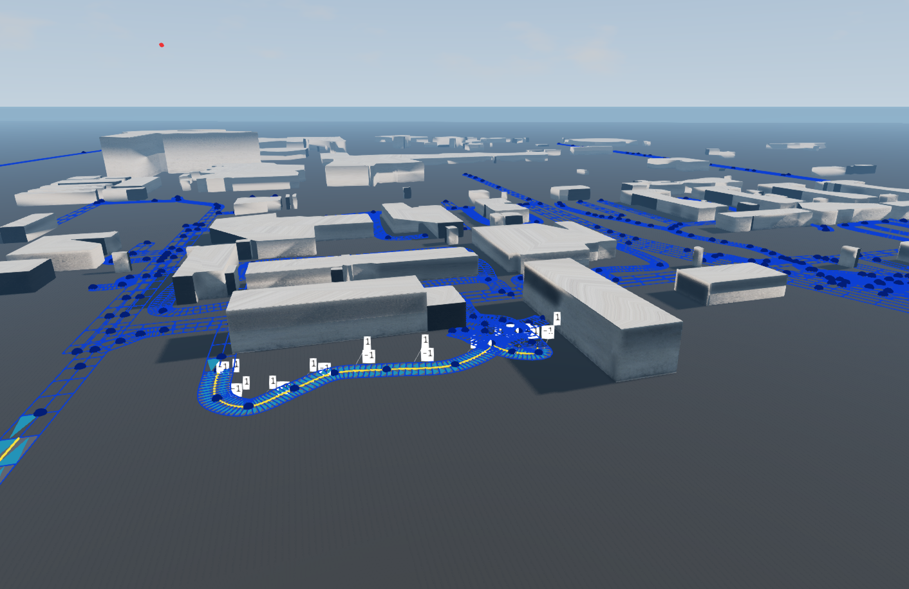
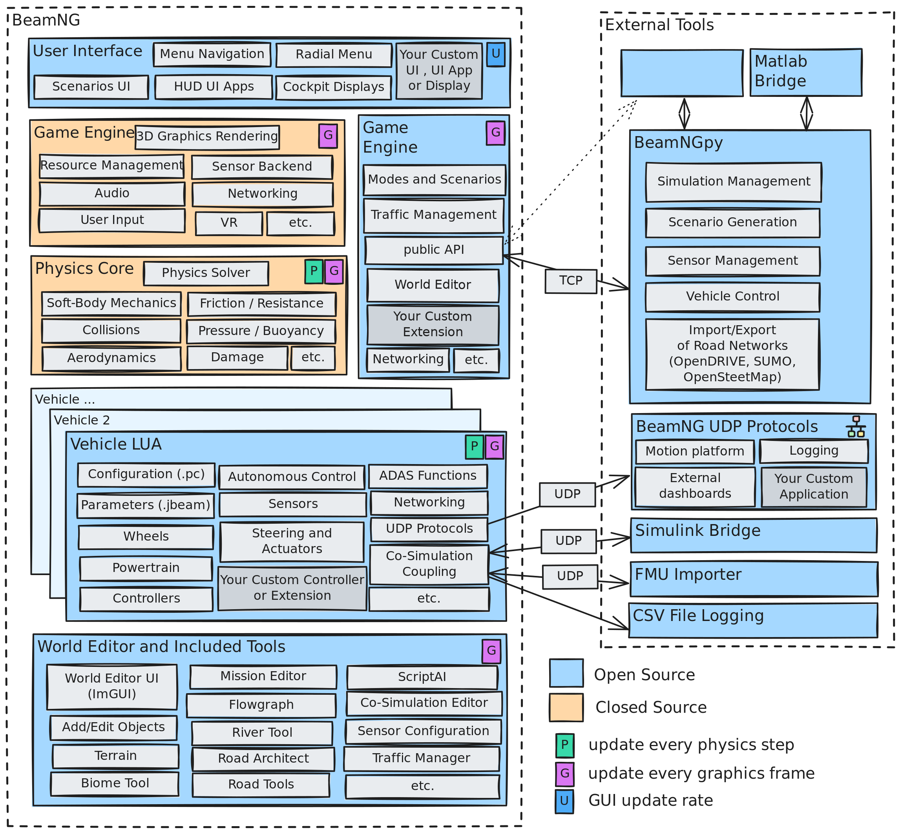
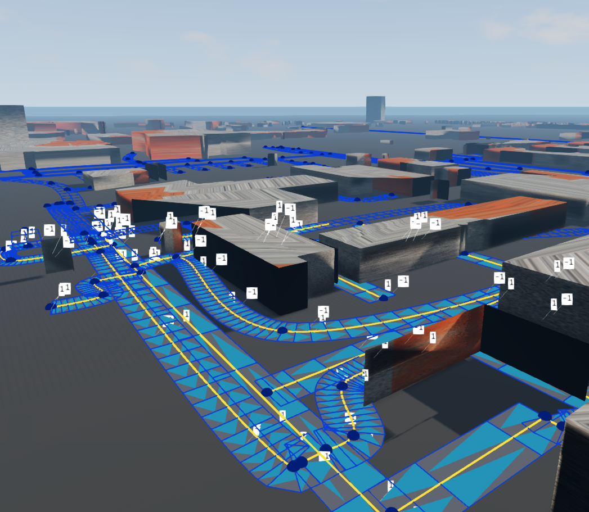
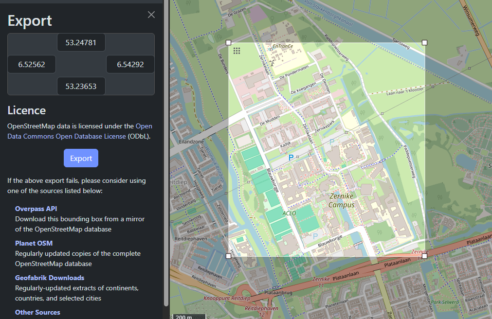
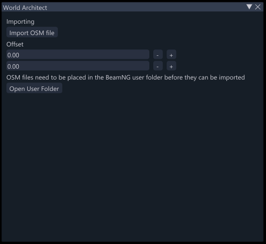
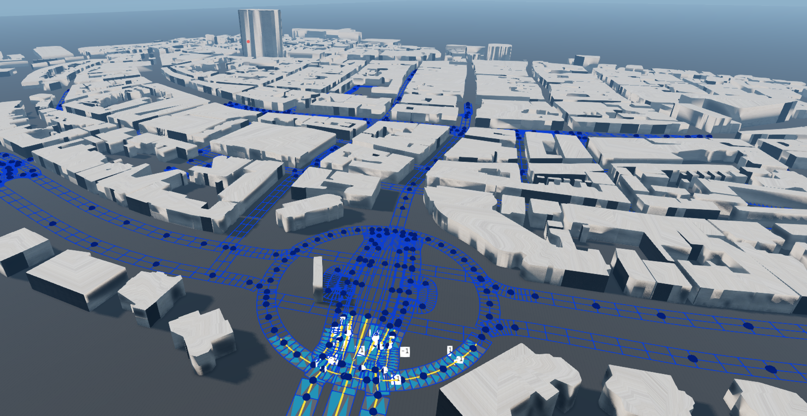

An extension for the BeamNG.tech driving simulator, it helps users create a "Digital Twin": a virtual replica based on real-life data.
This project was my graduation project at the Hanzehogeschool, it was made for one of the research groups within the Hanzehogeschool that researches autonomous driving and driving simulation.
BeamNG.tech is a sandbox vehicle simulator developed by Beamng GmbH, one of the research groups within the Hanzehogeschool wanted to research this simulator more as the advanced physics engine could be useful in their research.
The first objective in this graduation assignment was to research the possibility of digital twinning and adding content to BeamNG.tech to determine if the software is viable for the assignment, then the assignment became to set up a prototype for a digital twinning tool.

A view of the Hanze's campus, generated using the Digital Twinning tool.
The first steps in this project was to determine if the BeamNG.tech is compatible with the desired functionality in the first place.
Through this preliminary research it was determined that this is possible: BeamNG.tech is partially open-source, among those open-source parts of the software is also the "World editor" tool that allows users to create and edit landscapes.
One of the tools within the World editor: the "Road Architect" tool already supports digital twinning to some extend, as it allows users to import road networks in a format called "Opendrive".
After testing this tool by myself and the target audience some problems were found:
→ Real map data in the Opendrive format is difficult to find, it requires the user to convert it from another format.
→ The Opendrive format can not contain data on buildings, users would need a different file specifically for this.
→ Users cannot change the location of the generated road network in BeamNG.tech, they often generate far away from the working area.
From this research it was decided that BeamNG is viable software, and that building a custom tool for the World architect would be the best design direction.

A diagram made by BeamNG to visualize what the software architecture looks like.
Source:
documentation.beamng.com/beamng_tech/architecture/
The Tools within BeamNG.tech's world editor are written in the LUA scripting language, since I had no previous experience with LUA or BeamNG.tech, it took some time to grow accustomed to this.
One of the bigger issues I had throughout the project is that BeamNG.tech's documentation is not very extensive, this made it difficult to figure out what functions are available.
What really helped to figure this out was that the other World editor scripts are open-source as well, this made it easier to identify different functions.

Another view og the Hanze's campus in BeamNG.tech, made with an earlier version of the Digital Twinning tool.
Once the tool is installed within BeamNG.tech, a new tool will appear in the World editor toolbox called "World Architect".
This tool can import OSM formatted map data that can be exported from the OpenStreetMap website.

The exporting interface on the OpenStreetMap website.
Source:
www.openstreetmap.org/export#map=15/53.24187/6.53234

The interface of the World Architect tool in BeamNG.tech, from here users can import downloaded OSM files.
After exporting and downloading the exported map data, the user should place the downloaded file in BeamNG's data folder so that it can be imported.
Buildings will appear immediately after importing, roads will generate as editable previews that the user needs to switch to the road architect for.

Imported maps look like this, this specific map is generated from the area around the Hereplein in Groningen.
A lot of the logic behind the extension is purely written in the LUA language, but some of the BeamNG.tech-specific code was more difficult to figure out.
This function handles the user interface for the menu that opens within BeamNG.tech, code like this had to be reverse-engineered from other scripts because there is not much documentation on BeamNG.tech
-- World editor main callback for rendering the UI.
local function onEditorGui()
if not editor.editMode or (editor.editMode.displayName ~= editModeName) then
return
end
if editor.beginWindow(toolWinName, "World Architect") then
--IMPORT BUTTON
imgui.Text("Importing")
if imgui.Button("Import OSM file") then
if not FS:directoryExists("/OSMFILES/") then
FS:directoryCreate("/OSMFILES/", true) -- Creates OSMFILES folder if it doesn't exist yet, this folder is not strictly required, but users are encouraged to place OSM files here for better organisation(BeamNG stores different kinds of data in the user folder.)
end
editor_fileDialog.openFile(function(data) loadSession(data.filepath) end, {{"OpenStreetMap map file", ".osm"}}, false, "/OSMFILES/")
end
imgui.tooltip('Import OpenStreetMap map data (.osm)')
--OFFSET TODO: pass offset to importer
imgui.Text("Offset")
imgui.InputFloat("##XOffset", XOffset, 50, 1.0, "%.2f")
imgui.InputFloat("##YOffset", YOffset, 50, 1.0, "%.2f")
imgui.Text("OSM files need to be placed in the BeamNG user folder before they can be imported")
if imgui.Button("Open User Folder") then
if not FS:directoryExists("/OSMFILES/") then
FS:directoryCreate("/OSMFILES/", true) -- Creates OSMFILES folder if it doesn't exist yet, this folder is not strictly required, but users are encouraged to place OSM files here for better organisation(BeamNG stores different kinds of data in the user folder.)
end
Engine.Platform.exploreFolder("/OSMFILES/")
end
imgui.tooltip("Opens your BeamNG user folder")
end
editor.endWindow()
end
not all logic interacts directly with BeamNG.tech, this function calculates the middle of an imported map so it can be generated at the center of the virtual space.
Even though I had no prior experience with the LUA language, the extensive documentation it has made it easier to get started.
OSM files downloaded from the OpenStreetMap website are structured in an XML format, the Digital Twinning tool uses a pre-existing XML parser called xml2lua to parse these files in order to access the data.
This function cycles through all the nodes making up the road network to find the nodes with the highest and lowest longitudes and latitudes and then returns th middle point between those values.
The returned centerpoint is then used to generate the map around the center of the virtual space, this increases user friendliness because the roads and buildings are made up of multiple objects that are difficult to move.
-- Calculate the center of the OSM map
local function computeOSMOrigin(parsedData)
local minLat, maxLat = math.huge, -math.huge
local minLon, maxLon = math.huge, -math.huge
for _, node in ipairs(parsedData.osm.node) do
local lat = tonumber(node._attr.lat)
local lon = tonumber(node._attr.lon)
minLat = math.min(minLat, lat)
maxLat = math.max(maxLat, lat)
minLon = math.min(minLon, lon)
maxLon = math.max(maxLon, lon)
end
return {
lat = (minLat + maxLat) * 0.5,
lon = (minLon + maxLon) * 0.5
}
end
Generating the road network from the imported OSM file was one of the more challenging features to make in this project.
Even though another tool in the World editor -the Road Architect tool- can import and generate road networks that I could use as reference, BeamNG's roadMgr, profileMgr and Road architect scripts is very complex which made it difficult to determine how to set up the roads in the correct way.
This function uses BeamNG's pre-existing roadMgr and profileMgr scripts to create the road network from parsed OSM data to the format that BeamNG.tech expects.
The function still contains some checks to assert if some of the incoming data is correct, making sure that all the data is correct took some trial and error, since BeamNG.tech often does not return errors when the data is incorrect.
--create road from nodes
local function createOSMRoad(points, width)
if #points < 2 then return end
local laneData = {
[-1] = { type = "road_lane" }, -- Left lane (e.g., oncoming)
[1] = { type = "road_lane" } -- Right lane (forward)
}
local profile, laneKeys = profileMgr.createCustomImportProfile(laneData)
local rEPoly = formatOSMPoly(points, profile, laneKeys)
local road = roadMgr.createRoadFromProfile(profile)
road.nodes = rEPoly
for i, n in ipairs(road.nodes) do
assert(type(n.p) == "cdata", "node.p not vec3")
assert(next(n.widths), "node.widths empty")
assert(next(n.heightsL), "node.heightsL empty")
assert(next(n.heightsR), "node.heightsR empty")
end
--builds render data used in BeamNG
geom.computeRoadRenderData(road, roadMgr.roads, roadMgr.map)
local rIdx = #roadMgr.roads + 1
roadMgr.roads[rIdx] = road
roadMgr.map[road.name] = rIdx
roadMgr.setDirty(road)
return road
end